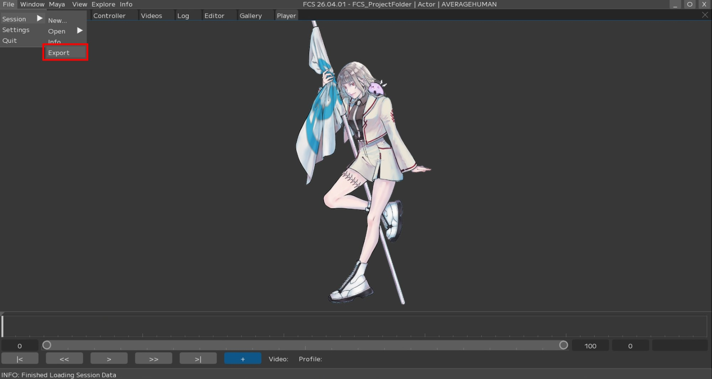
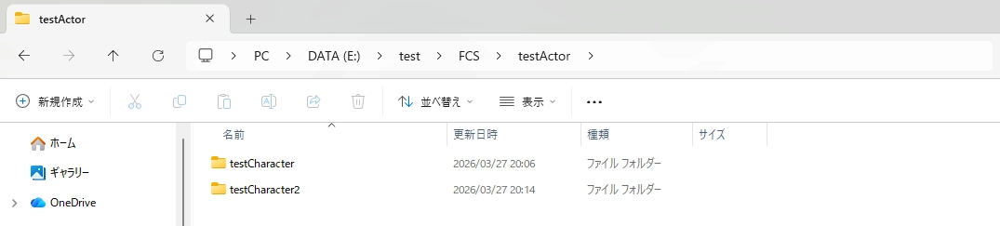

Export
In FCS, you can export the Sessions you have worked on.
This is primarily useful in the following cases.
Quickly share data when archiving FCS Sessions or moving project folders,
excluding unnecessary data such as cachesCreate facial expressions for a different character from the same actor’s Profiles
Create the same character’s expressions with a different actor
Export procedure
Load the Session you want to export
Select Export from File/Session
{kind=link}

Specify the destination as the project folder

1. Project Folder: Specify the output destination
2. Actor: Specify the actor name – *For archiving, you can leave it as is
3. Character: Specify the character name – *For archiving, you can leave it as is
4. Profile: Specify whether to export the current session’s Profiles
5. Videos: Specify whether to copy video data to the destination
No video: Do not copy video data
Associated video: Copy only associated videos
All files: Copy all video data in Recdata
6. Facial/Assets Folder: Specify whether to copy the Facial/Assets folder to the destination
Note
In the Project Folder field, specify the path of the destination project folder.
If the folder structure below the project folder does not exist,
new folders will be created automatically.
If you want to export testCharacter2 at the same level as E:\test\FCS\testActor\testCharacter, specify the destination as follows.
Project Folder: E:\test Character: testCharacter2
Press the Export button to output
{kind=link}
